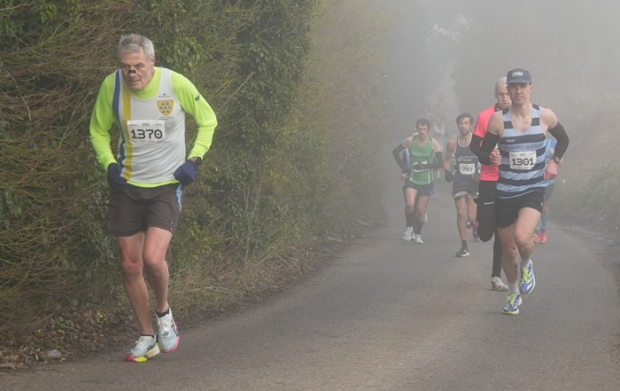

Mostly in freezing fog, Nicolene Hanekom was the women's winner of the Dartford Half Marathon and the incorporated Kent Long Course Road Race Championship at Central Park, Dartford on 2nd March. Of course, Nicolene was also first W45.

Keith Dowson was also a Kent champion, finishing first M60, while adding to the defence of his Kent GP M60 title after a win at the Deal Half and second place in the Canterbury 10.
Three other SAC runners contested the championships, with Chris Desmond 11th M60, and Simon Hallpike (2nd M70) and Sam Znetyniak (9th W45) just a stride apart further back down the field. The full SAC results were:
| Pos | ChipPos | Num | Name | Gun | Chip | Cat | CatPos | Gender | GenPos | Club | |
|---|---|---|---|---|---|---|---|---|---|---|---|
| 23 | 22 | 1747 | Nicolene Hanekom | 01:21:29 | 01:21:25 | V45 | 1 | Female | 1 | Sevenoaks Ac | |
| 79 | 81 | 1370 | Keith Andrew Dowson | 01:28:40 | 01:28:33 | V60 | 1 | Male | 76 | Sevenoaks Ac | |
| 366 | 379 | 1483 | Chris Desmond | 01:46:44 | 01:46:36 | V60 | 11 | Male | 331 | Sevenoaks Ac | |
| 520 | 536 | 22 | Simon Hallpike | 01:53:35 | 01:52:55 | V70 | 2 | Male | 446 | Sevenoaks Ac | |
| 521 | 537 | 1620 | Samantha Znetyniak | 01:53:38 | 01:52:58 | V45 | 9 | Female | 90 | Sevenoaks Ac |
The full results are here.